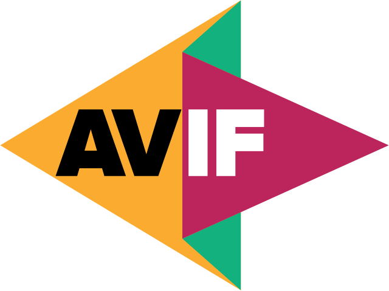

Formatos de Imágenes para Web
Formato PNG
El formato PNG es ampliamente utilizado para gráficos con transparencia y sin pérdida de calidad.
- Ideal para imágenes con fondo transparente.
- No pierde calidad al guardarse varias veces.
- Mayor tamaño de archivo en comparación con JPEG.

Formato WebP
WebP es un formato moderno que ofrece alta calidad con menor tamaño de archivo.
- Soporta compresión con y sin pérdida.
- Más eficiente que JPEG y PNG.
- No todos los navegadores antiguos lo soportan.

Formato AVIF
AVIF es un formato emergente con excelente compresión y calidad.
- Menor tamaño que WebP y JPEG.
- Soporta HDR y transparencia.
- Compatibilidad aún en desarrollo.

Formato SVG
El formato SVG es ideal para gráficos vectoriales escalables.
- Perfecto para logotipos e iconos.
- Basado en XML, permitiendo edición con código.
- No apto para fotografías.
Formato JPG
JPG es uno de los más utilizados en la web debido a su alta compresión y calidad aceptable.
- Alta compresión y calidad aceptable.
- Ideal para fotografías con muchos colores.
- Compresión con pérdida, lo que afecta la calidad si se comprime varias veces.